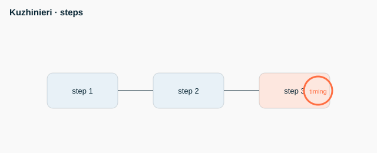

HACCP 7 principles: hazard analysis, CCP, critical limits, monitoring, corrective actions, verification, documentation CCP = critical control point (e.g. cooking 74 C) Critical limit: e.g. at or above 74 C Monitoring: measurement and recording Corrective action when the limit is not met